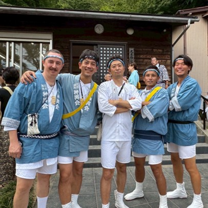
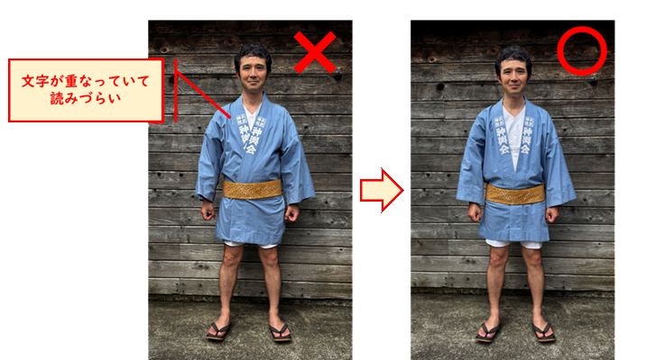
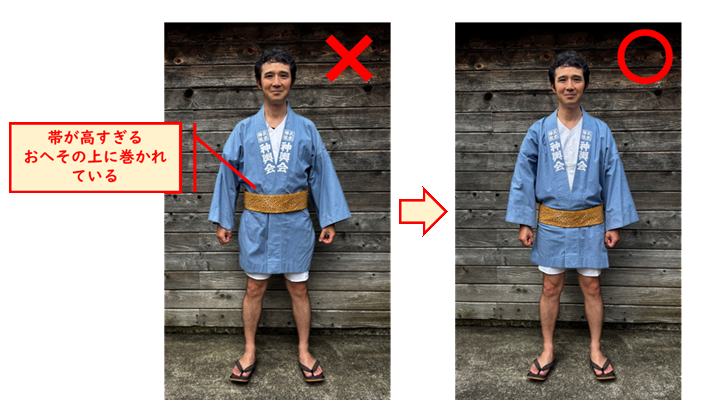
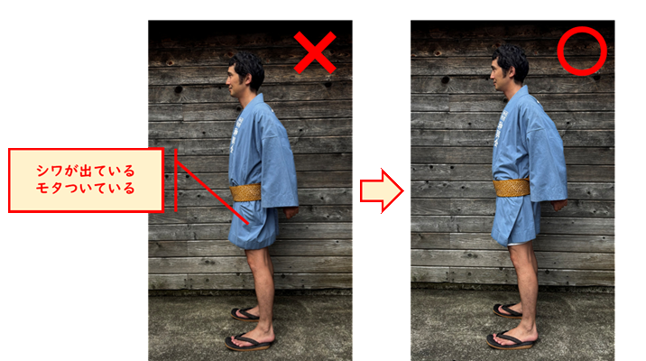

久木神社神輿会
はじめての方へ
久木神社神輿会では、初参加の方を歓迎しています。 練習なしでもOK、途中参加や途中休憩もOK。 「ちょっと気になる」という方でも、安心して参加できるようにポイントをまとめました。
今年の開催日
2026年7月26日（日）
16:00 〜 21:00
初参加の方も歓迎しています
安心ポイント
当日の流れ
細かいことを覚えなくても大丈夫です。何時ごろ行って、どんな流れなのかをざっくり把握すれば参加しやすくなります。
※ 実際の集合時間・巡行時間は、その年の案内に合わせて更新します。
初参加ガイド
「何を着ればいいの？」「担ぎ方が分からない」という疑問も、このページを見ながら、ひとつずつ分かるようにまとめています。

「いつ、どこに行けばいいか」が分かるだけでも、安心して参加しやすくなります。
「久木神社」に集合します。初めての方も、この場所に来ていただければ大丈夫です。
神社に着いたら、近くのメンバーに「初参加です」と声をかけてください。当日の流れや注意点を案内します。
大丈夫です。練習会は基本的にありません。当日は周りの人の動きを見ながら参加している方がほとんどです。
ずっと担ぎ続ける必要はありません。体力に合わせて休憩したり、途中で抜けたりできます。
最初から完璧に揃える必要はありません。「とりあえずこれがあれば大丈夫」という基準で準備してください。
半纏と帯の貸し出しを行っています。
半纏は、きれいに着られると見た目もよく、動きやすさも増します。難しく考えなくて大丈夫ですが、以下のポイントだけ押さえておくと安心です。
半纏は「右前」で着ます。文字がきれいに読めるように、右側の布を内側に重ねるのがポイントです。

帯は腰骨あたりを目安に巻くと、動きやすく見た目も整います。高すぎると苦しく、低すぎるとずれやすくなります。

半纏が大きめの場合は、脇に余った布を内側に折り込んで帯で留めると、すっきり着られます。

※ 写真のNG例・OK例を参考に、見た目を整えるだけで十分です
よくある質問
初めて神輿を担ぐ方から、よくいただく質問をまとめました。
参加する
初参加の方の多くが、Instagramのメッセージからご連絡いただいています。「初参加です」と一言いただければ、当日の流れや服装についてご案内します。
「初参加です」と送っていただければ、案内をお返しします。質問だけでも大歓迎です。
当日そのまま久木神社に来ていただいても大丈夫です。
神輿会について